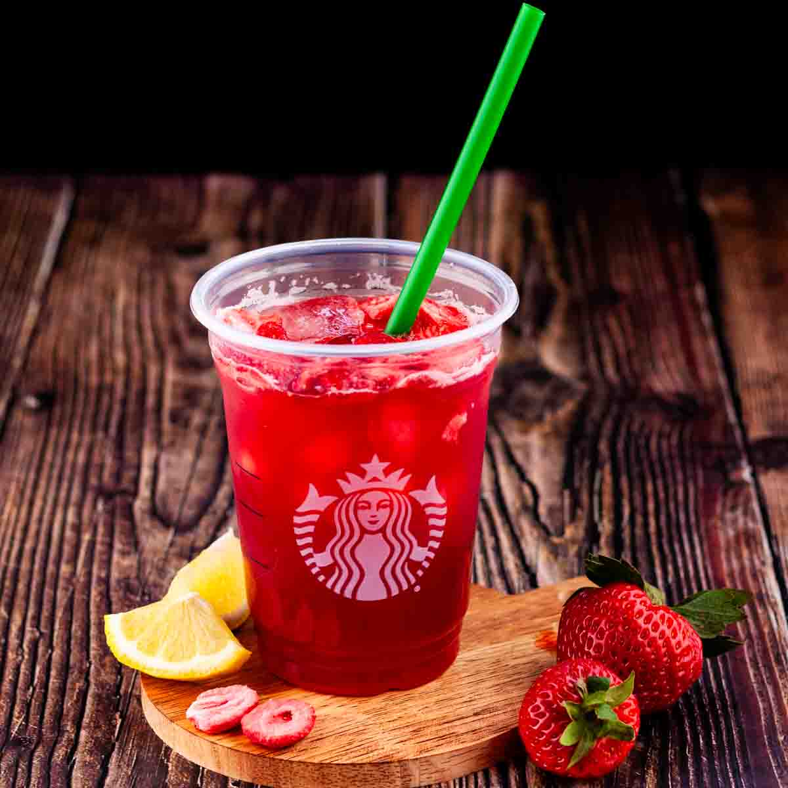
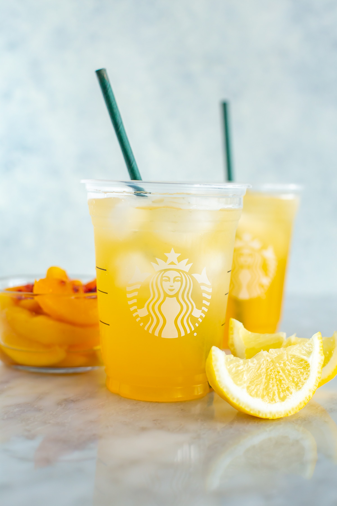
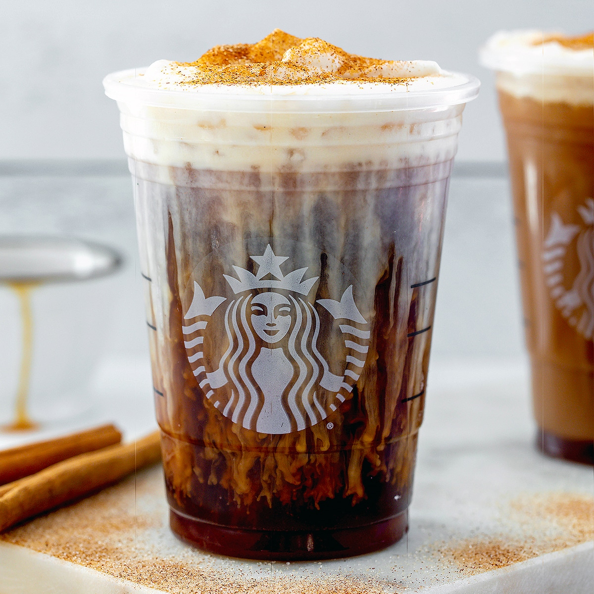

Strawberry Acai Refresher
- 1 cup coconut milk
- 1/2 cup fresh strawberries
- 1/4 cup açaí juice
- Ice cubes
- Fresh strawberries (for garnish)

Peach Green Tea Lemonade
- 1 cup brewed green tea (chilled)
- 1/2 cup peach juice
- 1/4 cup lemonade
- Ice cubes
- Peach slices (for garnish)

Salted Caramel Cream Cold Brew
- 1 cup cold brew coffee
- 1/2 cup caramel cream
- 1 tsp sea salt
- Ice cubes
- Caramel drizzle (optional)